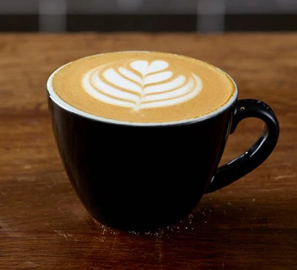

coffee

description
a typical drink that needs to be made correctly
ingredients
- one 1 tsp coffee granules
- sugar to taste 1 or 2 tsp
- milk or milk substitute
steps
- put the coffee and sugar in a mug and boil the water
- in the cup put the desired amount of milk
- add the water whilst stirring tp prevent burning the coffee